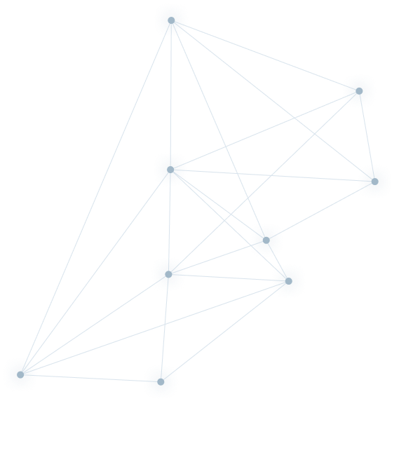

Why to consider customized laboratory design and processes?
By tailoring your laboratory to meet your specific needs, you can achieve better results and enhance your reputation in the marketplace.There are several reasons why customized laboratory design and processes should be considered:
Optimization of Space: Customized laboratory design can maximize available space, ensuring that the laboratory is organized in a way that is most efficient for the specific needs of the organization.
Better Workflow: Customized laboratory processes can optimize workflows and procedures, leading to more efficient operations and reducing the likelihood of errors.
Tailored Equipment: Customized laboratory design can include equipment tailored to the specific needs of the organization, leading to better results and less waste.
Improved Safety: Customized laboratory design and processes can improve safety, by optimizing the use of space, equipment, and procedures.
Increased Productivity: Customized laboratory design and processes can lead to increased productivity, by reducing downtime, minimizing waste, and improving workflows.
How Digitization Is Shaping the Future of Analytical Laboratories?
Digitization is transforming the way analytical laboratories operate, and it is shaping the future of these labs in several ways
Automation and Robotics: The use of automation and robotics is becoming more prevalent in analytical labs, from sample preparation to data analysis. This technology improves the accuracy and precision of experiments while freeing up researchers' time to focus on more complex tasks.
Big Data Analytics: Analytical labs are generating vast amounts of data every day, and digitization has enabled more efficient storage, retrieval, and analysis of this data. Big data analytics tools are helping researchers to identify patterns and trends in their data, leading to more informed decision-making.
Cloud Computing: Cloud computing is making it possible to access analytical data and software from anywhere in the world, improving collaboration between researchers and facilitating remote work.
Internet of Things (IoT): IoT devices are being used to monitor laboratory equipment and collect data on experiments in real-time. This technology can alert researchers to potential problems and enable them to adjust experiments on the fly, leading to faster and more efficient research.
Virtual and Augmented Reality: Virtual and augmented reality are being used to create virtual laboratories, which can be used for training purposes or to simulate experiments. This technology enables researchers to experiment with different scenarios without the need for physical equipment or resources.
In summary, digitization is revolutionizing the analytical laboratory industry, making it faster, more efficient, and more accurate. As technology continues to advance, it is likely that these labs will become even more automated and data-driven, leading to faster and more informed decision-making in research and development.
Why Automation Can Benefit Your Laboratory?
There are several reasons why adding automation to your lab can be beneficial, including:
Increased productivity: Automation can significantly increase the speed and efficiency of laboratory processes, reducing the time required to perform repetitive tasks and allowing researchers to focus on more complex activities.
Improved accuracy and reproducibility: By automating laboratory processes, you can eliminate the potential for human error and ensure that experiments are performed consistently, leading to more reliable results and greater confidence in your findings.
Cost savings: Automation can reduce the need for manual labor, which can lead to cost savings over time. It can also reduce the amount of reagents and materials used, which can help reduce expenses.
Increased throughput: Automated processes can handle larger volumes of samples, allowing for higher throughput and faster completion of experiments.
Enhanced data management: Automation can also facilitate data collection and management, making it easier to store, retrieve, and analyze data generated by your lab.
Overall, adding automation to your lab can improve the efficiency, accuracy, and productivity of your research, leading to faster and more reliable results.
How important is it to have an external consultant for GxP or ISO implementation?
GxP guidlineses and ISO regulations content is very general. It explains all the mandatory features but not how to implement them. Therefore, it is highly recommended to hire an expert if you don’t have in-house expertise.
Having an external consultant for GxP or ISO implementation can be very important for several reasons:
Expertise and Experience: External consultants have specialized knowledge and experience in implementing GxP or ISO standards. They are familiar with the requirements and best practices for compliance, and can offer valuable insights and guidance to help organizations navigate the implementation process more efficiently and effectively.
Objectivity and Independence: External consultants provide an independent perspective on compliance issues, which can be invaluable in ensuring that the implementation process is conducted objectively and without bias. This is particularly important for companies that lack internal expertise in GxP or ISO standards, or that may have conflicts of interest that could compromise compliance efforts.
Cost Savings: While hiring an external consultant may seem like an additional expense, it can actually save organizations money in the long run. External consultants can help organizations avoid costly compliance mistakes, identify inefficiencies in processes, and implement more streamlined workflows that can reduce costs over time.
Time Savings: External consultants can help organizations implement GxP or ISO standards more quickly and efficiently, which can be especially important for companies with limited resources or tight deadlines. By providing expertise and guidance, consultants can help organizations avoid delays and ensure that compliance efforts are completed on time.
In general, having an external consultant for GxP or ISO implementation can be very beneficial for organizations looking to ensure compliance, minimize risks, and improve efficiency. However, it's important to choose a consultant with the right expertise and experience, and to ensure that they have a thorough understanding of your organization's specific needs and objectives.

Get in touch
We are here to help you find the best solution to your challenges